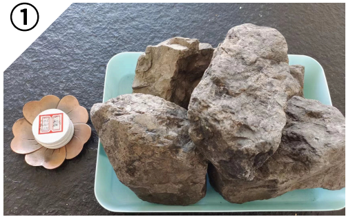
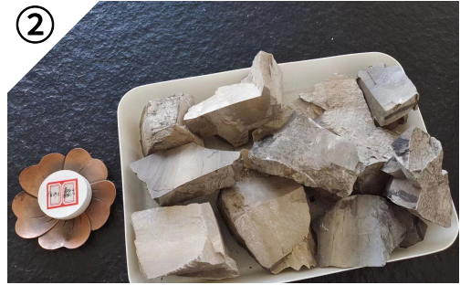
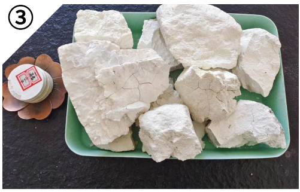
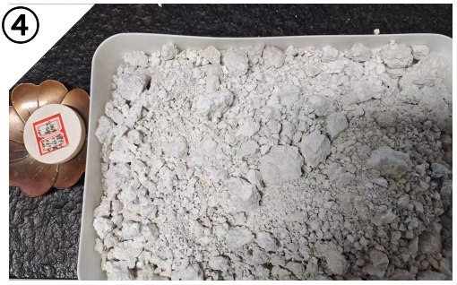
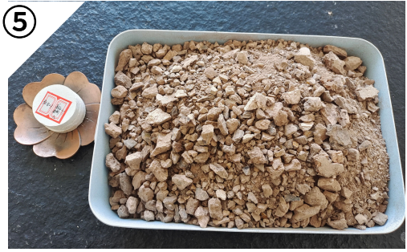
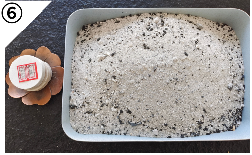

Coal Gangue
煤矸石
是一种与煤层伴生的含碳量较低的煤系高岭土。主要用于煅烧、化工、耐材、陶瓷。
核心化学成分 / 检测结果
91.3
白度（1200℃）
PRODUCTS / 产品中心

是一种与煤层伴生的含碳量较低的煤系高岭土。主要用于煅烧、化工、耐材、陶瓷。
核心化学成分 / 检测结果

在地表浅处与风化煤共生的高岭石。主要用于耐材、陶瓷、玻纤、煅烧、化工。
核心化学成分 / 检测结果

高岭土在窑炉中烧结到一定的温度和时间形成的高岭土熟料。主要用于耐材、化工。
核心化学成分 / 检测结果

膨润土是以蒙脱石为主要矿物成分的非金属矿产。用于陶瓷、净化、造纸。
核心化学成分 / 检测结果

一种可塑性优良的粘土。主要用于耐材、陶瓷。
核心化学成分 / 检测结果

燃煤电厂粉煤灰，其中高度富含铝。主要用于耐材、陶瓷。
核心化学成分 / 检测结果
矿床赋存于煤系地层中，矿石耐火度高达 1200℃-1950℃，为窑炉安全提供顶级骨料。
原料具有高活性、高白度、孔隙率和遮盖率高、容重小等优点，提供定制化加工，完美契合陶瓷配方。
从矿山开采到精细化加工，全流程透明可追溯。横向滑动，查看更多产线实况。
生产线实拍 · 01
生产线实拍 · 02
生产线实拍 · 04
生产线实拍 · 06
生产线实拍 · 08
企业宣传实拍 · 03